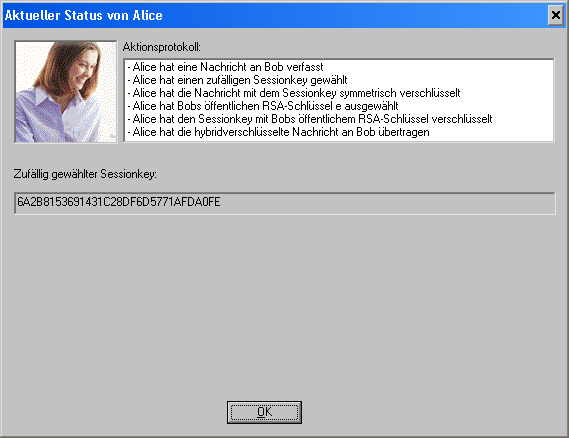

Sie können diesen Dialog aufrufen, indem Sie im Dialog Seitenkanalangriff auf das Hybridverschlüsselungsprotokoll auf das Symbol von Alice klicken.
Durch diesen Dialog erhalten Sie detaillierte Informationen über Alice.

Neben dem Portrait von Alice befindet sich das Aktionsprotokoll, das alle wichtigen Schritte protokolliert, die Alice während des Seitenkanalangriffs durchgeführt hat. Im Textfeld darunter ist der zufällig gewählte Sessionkey dargestellt, den Alice zur Verschlüsselung der Nachricht an Bob verwendet hat.
Bemerkung:
Hat Alice die Nachricht nicht selbst verschlüsselt, sondern eine bereits existente und hybridverschlüsselte Datei ausgewählt, dann wird der Sessionkey nicht angezeigt – schließlich kennt Alice den Sessionkey in diesem Fall nicht!